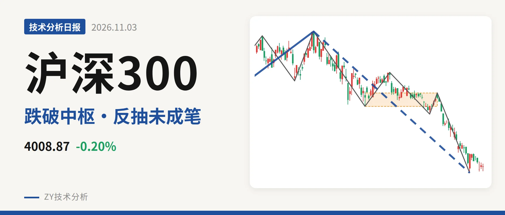
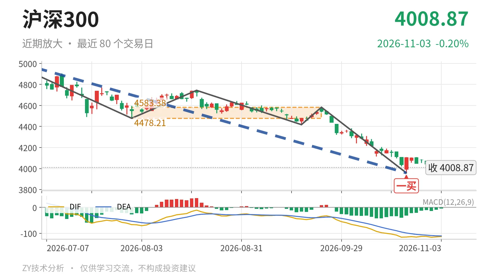

沪深300｜跌破中枢后反抽，4478点未收复

最近日线中枢 4478.21—4583.38点，收盘位于中枢之下
一句话：日线下跌段还在延续，价格位于最近中枢下方，反抽未形成日线笔
📉 走势结构：日线下跌线段仍在延续
沪深300仍处在6月23日以来的日线下跌线段里，该线段没有结束。3月24日至6月23日的日线上涨线段结束于5064.27点，之后转入下跌。更大级别上，2024年2月2日至2026年6月23日的上涨走势尚未走完，累计上涨约63%；6月23日以来的下跌约21.8%，仍属于这轮上涨中的回调。当前低点3958.14点后虽有回升，但强度尚不足以扭转日线线段结构。

🧭 中枢与位置：收盘低于最近中枢下沿约10.5%
最新收盘4008.87点，位于7月30日至9月22日日线笔中枢（4478.21—4583.38点）下方，低于下沿约10.5%。该中枢尚未完成，中轴在4530.80点。与2月3日至3月17日中枢（4578.21—4720.86点）相比，中枢位置下移。下方可参考2024年10月8日至2025年5月30日的中枢3812.32—4200.91点，当前价格落在其中轴4006.61点附近。
🔍 买卖点：10月23日一买后反抽未成笔
日线笔级别上，10月23日3958.14点构成一买。9月22日至10月23日的下跌笔已经结束，但10月26日至11月3日只有7根K线，最高4110.00点、最低3968.86点，尚未构成日线上涨笔。因此该一买后的回升只能先当反抽看。若后续下破3958点，这个一买只对应更小级别。上方1月13日4836.95点一卖、2月25日4766.56点二卖、3月17日4720.86点类二卖，一个比一个低，反抽压力也逐级下移。

⚖️ 背驰：当前下跌段未出现“新低不新弱”
当前日线下跌线段内部，9月22日至10月23日下跌笔与6月23日至7月30日下跌笔比较：后者绿柱面积650，DIF低点-66.5；前者绿柱面积494，DIF低点-115.1。价格创了新低，绿柱面积稍有收缩，但DIF低点继续走低，没有形成“新低不新弱”。这意味着10月23日3958点的一买没有标准底背驰配合，其后反抽能否成笔、能否触回中枢，是观察线段能否转折的关键。
📌 关键位置观察：反抽不回4478点则构成三卖
第一个结构分界在4478.21点。若10月23日低点后的反抽形成日线上涨笔，却回不到4478点上方，结构上构成对7月30日至9月22日中枢的三卖，日线下跌线段仍会延续。若重新站上4478—4583点中枢，下跌更可能是中枢扩展。下方3958点若再失守，价格将向下参考3812—4201点中枢。综合看，当前位置以弱势处理：收盘低于中枢下沿约470点，DIF仍在零轴下方，反抽尚未成笔。
⚠️ 本文为基于公开行情数据的缠论技术结构记录，由程序自动计算并生成，仅供学习交流，不构成任何投资建议。市场有风险，投资需谨慎。